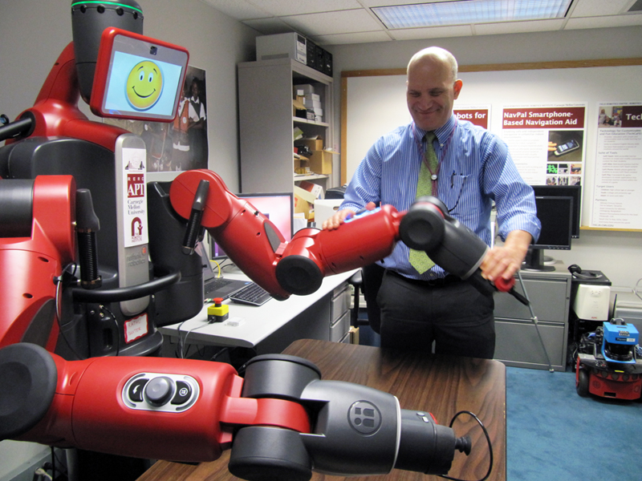
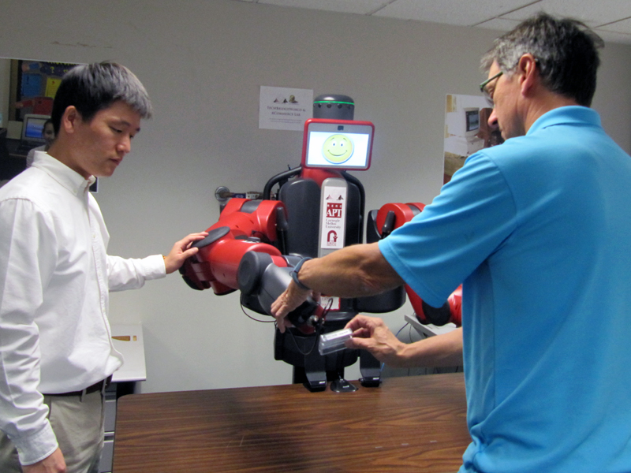

About
For over a decade, the TechBridgeWorld research group at Carnegie Mellon University's Field Robotics Center has been developing state-of-the-art technology in partnership with underserved communities in the U.S. and around the world. We primarily work with people in economically deprived communities (often in the developing world) and with people with disabilities. For all of our projects, we involve stakeholders and users starting early in the innovation process to maximize the probability that our technology solutions truly meet the needs and vision of progress in each community.
The Rehabilitation Engineering Research Center on Accessible Public Transportation (RERC-APT) does research and development on methods to empower consumers, manufacturers, and service providers in the design and evaluation of accessible transportation equipment, information services, and physical environments. This partnership, between the Robotics Institute at Carnegie Mellon University and the IDeA Center at The University at Buffalo, State University of New York, has been funded by the National Institute on Disability, Independent Living, and Rehabilitation Research (NIDILRR, formerly NIDRR) since 2008. The team has explored many aspects of public transit with an eye towards independent, high-quality daily travel through universal design and and stakeholder engagement.
Motivation
As robotics technology evolves to a stage where co-robots become a reality, we need to ensure they are equally capable of interacting with humans with disabilities. For people with disabilities independent transportation remains a major barrier to employment and quality of life. Furthermore, emergency situations necessitating evacuation is one of the greatest fears they face. The ultimate objective of this project is to enhance the safety and independence of blind travelers.
Research Areas
Our work explores meaningful human-robot interaction in the context of assistive robots for blind travelers. The key question we seek to answer is: what role can co-robots play in empowering people with disabilities to safely travel to and navigate unfamiliar environments? We hypothesize that co-robots can enhance the safety and independence of these travelers by assisting them to navigate unfamiliar urban environments effectively and providing support when evacuating. True to our research methodology, we have involved Orientation & Mobility specialists and blind and visually impaired travelers in needs assessment to understand the preferences and challenges of blind travelers. Pictured: Researcher (left) engages Orientation & Mobility instructor (right) to learn how robot can meaningfully help blind and visually impaired travelers.
As a result of this needs assessment, we have identified three research areas:
Accessible Interfaces
Our research is figuring out how to make the variety of interfaces accessible to people with different disabilities and preferences. In this work we are exploring both digital and physical interfaces using three different technology platforms: two robots plus a smartphone. All interfaces that we develop for this project will be accessible.
Assitive Interaction
We are currently researching three mechanisms of human-robot interaction -- physical, verbal, and digital -- with a focus on defining the foundations of human-robot interaction for humans who are blind or visually impaired. Below are the platforms we are using to explore these methods of interaction:
- One method is to interact directly with an assistive stationary robot. For this work, we are including Rethink Robotics’ Baxter research robot, chosen for its semi-humanoid form, physical safety features, and its capacity to be trained by non-programmers.
- Another direct method is with an assistive mobile robot. For this work, we are including a Pioneer P3-DX robot by Adept Mobile Robots.
- Finally, we are exploring remote human-robot interaction via smartphones. For this work, we are developing relevant applications via Android smartphones.
Effective Cooperation
This upcoming research area will focus on the seamless collaboration of the above robots and tools with blind and visually impaired travelers in an urban environment.
Rathu Baxter
"Rathu Baxter" is the name of our Baxter Research Robot made by Rethink Robotics ("Rathu" means "red" in Sinhalese). We are exploring how the Baxter robot, originally designed to assist humans in manufacturing settings, can assist visually impaired users in unfamiliar urban environments. Guided by needs assessment and user testing, our goal is to design robotics behaviors for Rathu so that it can interact with users in a meaningful manner and provide assistance in ways that do not require vision capabilities on the part of the human. This research involves three main tasks:
- Assistance - What types of assistance would be helpful? Currently, we are focusing on navigation assistance in unfamiliar urban environments, such as airports, bus stations, and universities. For example, Rathu can assist users in a physical task that requires visual perception such as selecting bus tickets or sorting unfamiliar currency. Needs assessment and user testing with blind and visually impaired travelers continues to inform this work.
- Interaction - How will users discover, locate, and approach Rathu Baxter and what should be the robot’s methodology for introduction and reaction? Different approaches are being analyzed. For instance, Rathu can lead the interaction by verbally offering a list of menu options and allowing users to navigate the options using either voice commands or a tactile interface. The design of these interactions will be guided by user feedback, social norms and expert feedback.
- Navigation - What instructions and/or information should Rathu Baxter provide so that travelers can safely and independently reach their destination? Rathu Baxter can verbally provide travelers with useful information when navigating indoor spaces (e.g. directions and landmarks) and assist them in completing manipulation tasks for navigation (e.g. selecting the correct bus ticket). There is also potential for Rathu Baxter to provide tactile information (e.g. physical directions). These actions will also be created in a safe manner that builds trust by informing the user about the different actions that the robot will perform.
Regarding Effective Cooperation, we envision Rathu Baxter working with other technologies involved with the project, such as Mobile Robots and NavPal, and humans to provide more comprehensive solutions.
Mobile Robots
The Mobile Robots project explores how mobile robots can enhance the navigation experience of blind and visually impaired travelers in urban environments. We envision a robot that lives in the building and meets users as needed. This simplifies battery, cost, and localization issues. "Podi" is the name of our Pioneer P3-DX mobile robot by Adept Mobile Robots ("Podi" means "small" in Sinhalese). The three research areas include:
- Localization - We are investigating how to capture the most intuitive environmental cues via sensors to identify the mobile robot and the traveler’s current location. We are also exploring the feasibility of incorporating the NavPal smartphone app for more accurate localization and tracking of the traveler’s behavior as the person traverses along the planned route.
- Urban Navigation - Our project is exploring several existing path-planning algorithms to make the mobile robot’s navigation in urban environments more systematic. Furthermore, we plan to incorporate relevant algorithms to enable our mobile robot to adapt to unexpected changes in the environment and new requests from travelers.
- Control - As it stands, there is no convenient way for the traveler to physically grip and follow the Pioneer P3-DX. Guided by needs assessment and user testing, we are developing a mechanical attachment so that the traveler can effectively and comfortably follow the mobile robot.
NavPal
NavPal is a smartphone app to give navigational assistance to blind adults as they move around unfamiliar indoor and outdoor environments. The Assistive Robots for Blind Travelers project utilizes the NavPal app which runs on an Android smartphone device. Within this project, the NavPal app’s purpose will be to guide travelers to and from the other robots as well as other destinations. This research consists of two areas:
- Accessible Interface - Our research is focusing on optimizing the user interface to be accessible to as many users as possible. We are exploring an assortment of accessible user interface components including: gestures, speech recognition, haptic feedback (vibration), and text to speech.
- Localization - We are currently using a combination of many technologies, including GPS and Wi-Fi fingerprinting, to determine the user's location while navigating. In the future, we hope to make NavPal helpful to people with other disabilities by finding paths that can fit various specialized criteria, such as avoiding stairs or steep inclines.
NavPal could also be used to enhance the traveler’s interaction with the other robots in this project. For example, the app could lead the traveler to Rathu Baxter so that it can assist them with a physical task. While the traveler is being led by a mobile robot, the mobile robot could communicate with the user via the NavPal app, alerting the traveler about a sharp turn or an abrupt stop. NavPal may also be able to transmit select user preferences to robots to allow for customized interactions, such as prefered talking speed or how familiar they are with the system.